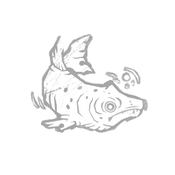

红鲱鱼 Red Herring
所属：扎丽娜·卡西尔（逃生者）
| 等级 | 档位 1 | 档位 2 | 档位 3 |
|---|---|---|---|
| 数值 | 25 1 | 20 | 15 |
描述
"你已注意到，人们会关注任何制造最响亮噪音的事物。" 修理发电机1秒后，红鲱鱼触发其主要效果：该发电机的气场将以黄色高亮显示给你。高亮效果持续至以下任一情况发生：该发电机完成修理；你开始修理另一台发电机；你进入储物柜。当进入储物柜时，红鲱鱼触发其次要效果：在被高亮标记的发电机处为杀手触发一次响亮的噪音提示。红鲱鱼有25/20/15秒的冷却时间。"新闻编辑会删去沉重复杂的内容，而那正是真相。" — 扎里娜·卡西尔